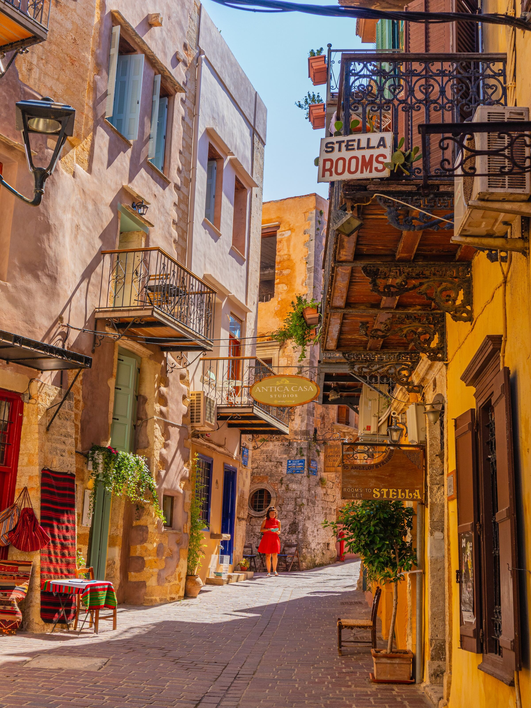
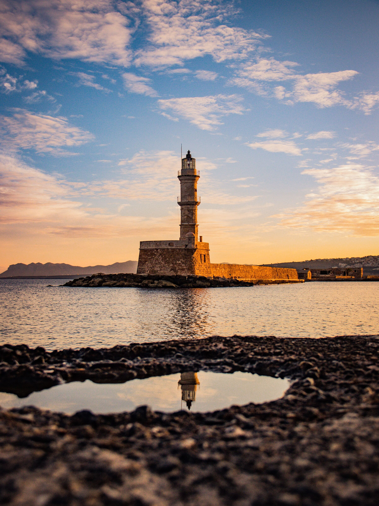
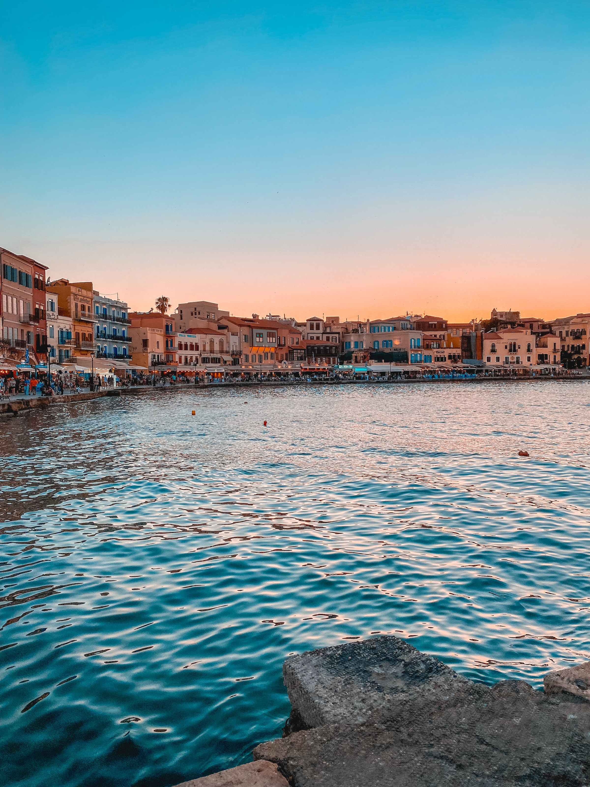
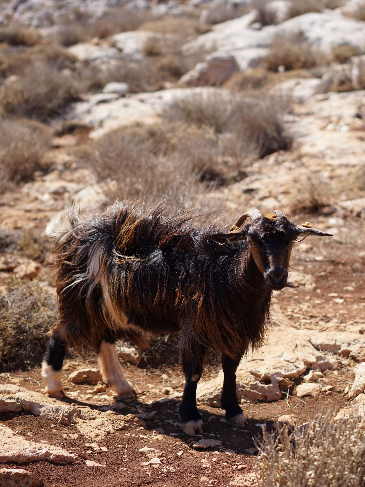
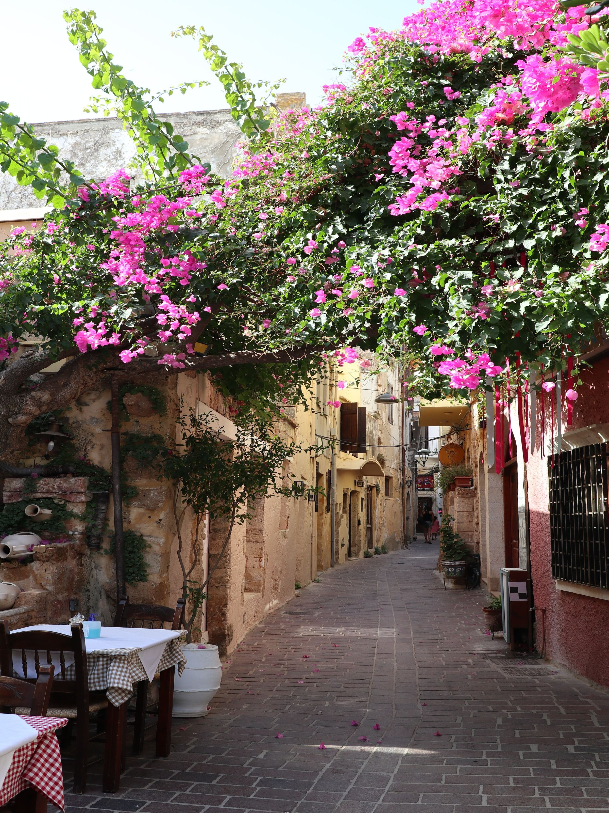
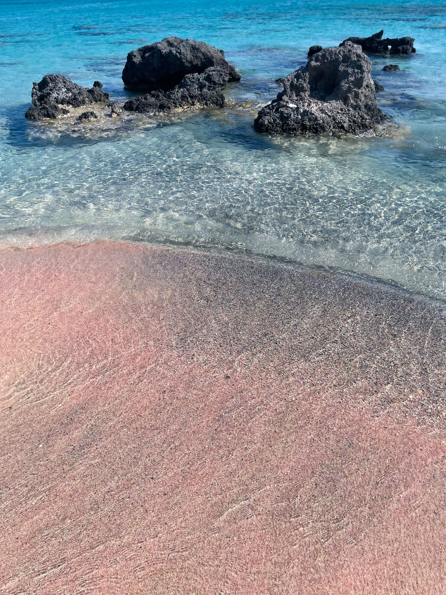
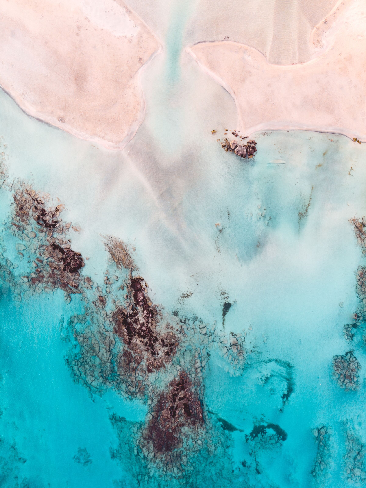
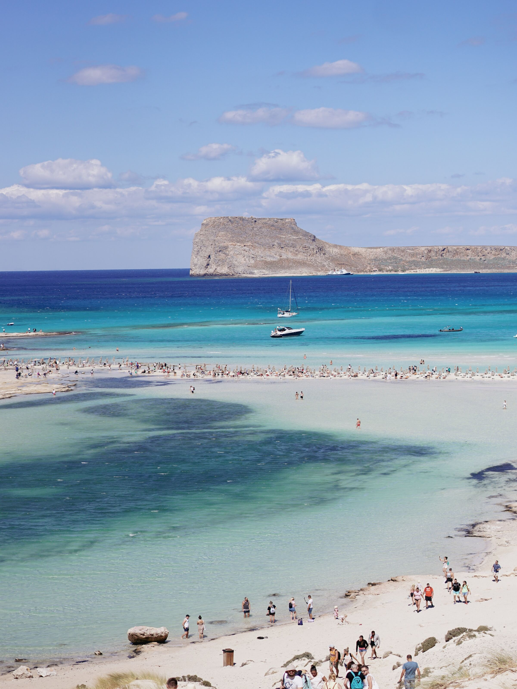

Accomodation
Pelagias Old Town Suite, Chatzimichali Ntaliani, Chania, Greece
Itinerary
11th of July - 15th of July
Day 3 (13/07/2023)
Drive 1 hour and 30 minutes to Elafonissi Beach
Drive another 12 minutes to Kedrodasos Beach
Dinner at To Steno or Koutourouki
Day 4 (14/07/2023)
Drive 50 minutes to Lake Kournas
Lunch at Taverna - Café Kavalos
Rent pedal boats
Dinner in Chania at Adespoto







